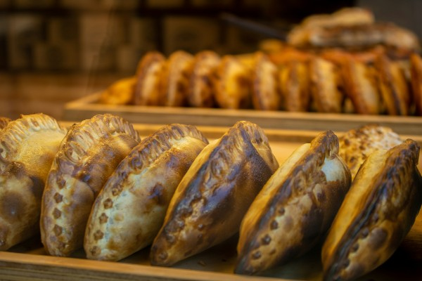
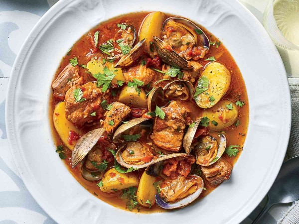

Submit your own recipe here!

I would say this is my favorite dish/recipe because it's very easy to make and it revolves around my childhood. I grew up in a Dominican household and this was always something my mom would make for us to have for a snack, or even a side with lunch and dinner. They are so easy and quick to make, and you can honestly replace the filling with whatever you like (Pepperoni and cheese or chicken and cheese are also very good)! Here I'll tell you everything you need to make this amazing dish!
| Quantity | Name |
|---|---|
| 2 pounds | Ground beef |
| 1 whole | Onion |
| 1/3 | Red pepper |
| 1/3 | Green pepper |
| 4 tbs | Tomato paste |
| 1 tbs | Cilantro chopped |
| 3 | Garlic cloves |
| 1 tbs | Chicken Bouillon Cube |
| 1/4 tbs | Cumin |
| 1 tbs | Dominican Oregano |
| 1 tbs | Sazon |
| 1 | Lime |
| 6 | Frozen empanada discs |

Benji describes this as heaven on earth. Something that is a mix of all different kinds of ingredients and spices that makes a delightful taste on your mouth. He says that he would go out to eat it, but he much prefers when his gradfather cooks it for him.
| Element | Quantity | Process |
|---|---|---|
| Boneless pork shoulder | 2-3 lbs | Cut into 1-inch cubes |
| Little neck clams | 1 lb | Cleaned thoroughly |
| Yukon gold potatoes | 2 lbs | Peel and dice into small cubes. |
| White onions | 1 medium | Finely chopped |
| Garlic | 5 cloves | Minced or crushed |
| Olive oil | 3 tbsp | For sautéing |
| White wine | 1 cup | For sutéing & deglazing the pan |
| Spices & herbs | 2-3 bay leaves, 1 tbsp paprika and massa de pimentão, fresh cilantro/parsley | For simmering the dish |